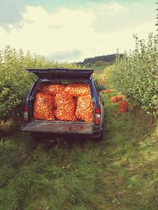

We’re a small Independent cidery founded in 2014 in Conon Bridge on the Black Isle about 13 miles to the north of Inverness.
The aim for our cider is to reflect as far as possible our local Highland terroir, which in cidermaking terms remains a largely uncharted territory. This is our exploration of cider at its northern frontier.
We use every locally grown apple we can get our hands on whether they’re grown in gardens or orchards, sharp cookers, juicy eaters or bitter wee cider apples, we find a use for every one. Our cider apple orchards are among the most northerly in Europe and provide us the perfect starting point for all our blends.
We only ever ferment freshly pressed juice using wild yeast found naturally on the apples and in the cidery itself. We both ferment and mature in oak barrels at ambient temperature. This ensures a cold, slow fermentation which tracks the natural weather fluctuations as we head through the winter and into spring, it’s not uncommon during the depths of winter for the juice to freeze solid for a few days at a time in our cidery. Every vintage brings it’s own unique character.
The barrels are then blended by taste to produce our individual ciders or are singled out for one of our limited edition bottlings.
We have no ingredients other than apples and of course time, so all of our ciders are Gluten-free, Suitable for vegans and have no added sulphites.
We hope you enjoy exploring what a Highland cider can be with us.